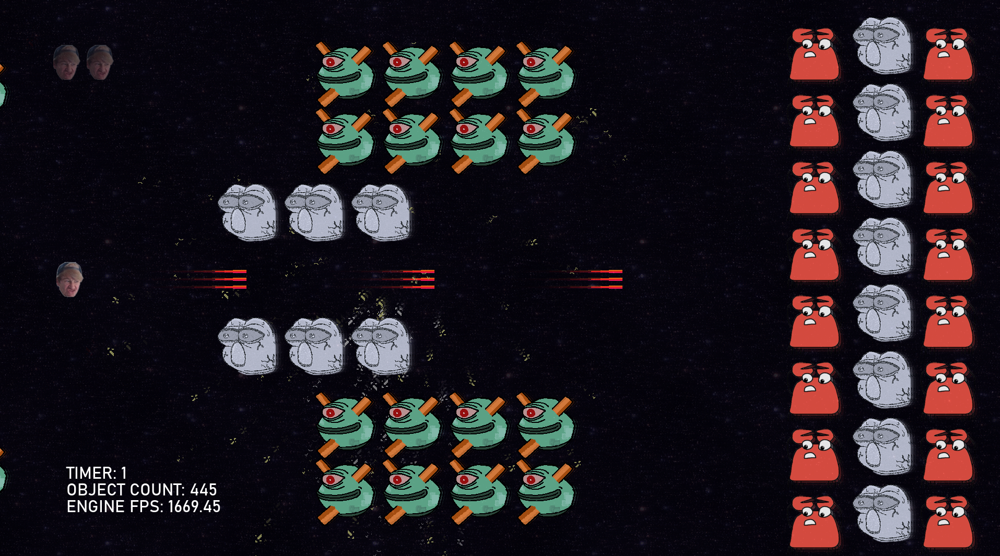

Talkashie's Webpage
My Games
Here's where I will put any projects that I am working on. These may be in various states of disrepair.
Super Dowsky Adventure 64

Super Dowsky Adventure 64 is a joke game based off of Super Mario 64 speedrunner Dowsky. It was never a project I intended on finishing, but I've had a lot of fun developing it. It needs optimization currently as it may lag on weaker hardware when explosions are going off.
Genre: Side-scrolling Shooter
Controls: Mouse to move, shoot, and select menu items
Download: -soon-